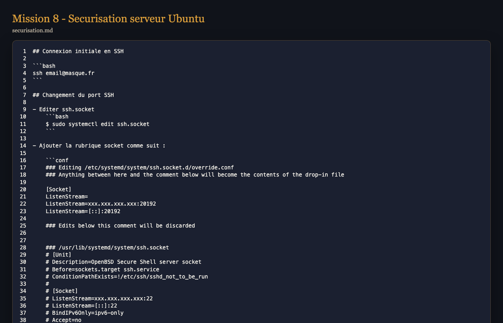

Contexte et acteurs
Sur le serveur Ubuntu de l’entreprise AESysteme, j’ai travaillé sur les accès d’administration et le filtrage réseau. Cette intervention concerne l’administrateur du serveur et les utilisateurs des services hébergés.
Expression du besoin
Encadrer l’accès au serveur et limiter les connexions non nécessaires, tout en conservant les accès utiles à son administration et aux services.
Solution retenue et justification
La réalisation comprend la création d’utilisateurs, la configuration de SSH, la limitation des connexions et l’activation du pare-feu. Le filtrage réduit les services exposés. Changer le port SSH peut limiter le bruit des tentatives automatisées, mais ne constitue pas à lui seul une protection : les droits et l’authentification restent essentiels.
Étapes de mise en œuvre
- Identification des accès d’administration à configurer.
- Création des comptes utilisateurs nécessaires.
- Modification du port SSH et limitation des connexions.
- Activation et configuration du pare-feu.
- Documentation de la configuration.
Tests et résultat obtenu
La configuration réalisée est présentée dans la preuve technique ci-dessous.
Validation à compléter : joindre les résultats d’une nouvelle connexion SSH autorisée, du refus d’un accès non autorisé et de l’accès aux services conservés. La documentation disponible ne permet pas d’attester ces contrôles. Pour toute modification future du pare-feu, conserver une session de secours avant de fermer l’accès courant.
Compétences mobilisées
- Gérer le patrimoine informatique : identifier les accès et les ressources du serveur.
- Répondre aux incidents et aux demandes d’assistance et d’évolution : prendre en compte une demande de sécurisation.
- Mettre à disposition un service informatique : préparer une configuration d’exploitation et sa validation.
Bilan personnel
Cette intervention m’a sensibilisé à l’équilibre entre sécurité et disponibilité. Une règle de filtrage incorrecte peut bloquer l’administrateur : les changements doivent être documentés, testés et accompagnés d’une possibilité de retour arrière.
Preuves
